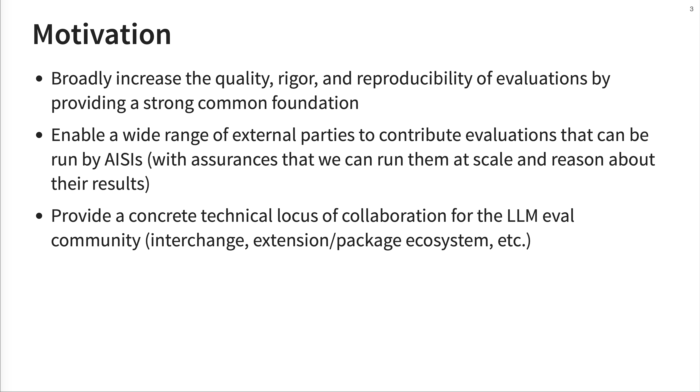

Inspect AI, An OSS Python Library For LLM Evals
A few weeks ago, I had the pleasure of hosting JJ Allaire for a guest lecture in our LLM Evals course. For those who might not know, JJ is a legend in the developer tools space. He’s the founder of RStudio (now Posit), the company behind the RStudio IDE and many foundational packages in the R and Python data science ecosystems. When someone like JJ turns their attention to a new problem, it’s worth paying close attention.
His latest endeavor is Inspect AI, an open-source framework for building and running LLM evaluations. He developed it during a sabbatical with the UK’s AI Safety Institute (AISI), an organization that runs thousands of evaluations on frontier models. Since then, its been adopted as the framework of choice for many of the largest AI labs including Anthropic, DeepMind, and Grok.
The talk was an overview of Inspect’s philosophy, architecture, and features. This is an annotated version of his presentation inspired by Simon Willison’s annotated presentations.
Video
Here is the full video:
👉 We are teaching our last and final cohort of our AI Evals course next month (we have to get back to building). Here is a 35% discount code for readers of this post. 👈
Annotated Presentation
Below is an annotated version of the presentation, with timestamped links to the relevant parts of the presentation for each slide.
1. Inspect Overview
Inspect is a Python package (inspect-ai) designed to bridge the gap between research and production for LLM evals. JJ emphasizes that it’s already used for nearly all of the UK AISI’s automated evaluations and has seen broad adoption from major AI labs like Anthropic, DeepMind, Grok, and others.
2. Motivation

The motivation behind Inspect is to improve the reproducibility of evals, especially for large-scale evaluations of frontier models. Inspect achieves this by providing common tools and a simple entry point to run almost any benchmark with a single command. In addition to making benchmarks reproducible, Inspect provides a framework that helps with domain-specific and custom evals.
Inspect is open source and actively welcomes external contributions.
3. Core Concepts
JJ breaks down Inspect into three core concepts: the Dataset, the Solver, and the Scorer. * Dataset: This is your set of test cases, each with an input (the prompt for the model) and a target (the correct answer or grading guidance). * Solver: This is the heart of the operation. It’s a Python function that defines the logic for how the model should generate its output. This can range from a simple model call to complex chains involving prompt engineering, self-critique, or using tools and agents. * Scorer: This function evaluates the model’s output against the target. It can be a simple text comparison, a more complex model-graded evaluation (e.g., using an LLM as a judge), or a completely custom validation scheme.
JJ clarifies that the “Solver” is where you can implement more complex reasoning techniques. He gives the examples of using “critique and regenerate” cycles or an “agent scaffold with tool use” to define how the model arrives at its answer.
4. Hello, World Example
This code example demonstrates the main components of the framework. In this example, the plan is to first use a chain_of_thought prompt, then a standard generate call, and finally a self_critique round before producing the final output that gets score.
A task (theory_of_mind) is defined using the @task decorator. Inside, it returns a Task object that specifies the dataset, a plan (a list of solvers like chain_of_thought and self_critique), and a scorer. The final eval() call runs the entire evaluation against a specified model (openai/gpt-4).
5. Two Views of Inspect
JJ presents two ways to think about and use Inspect. The High Level view is about using pre-built building blocks (solvers, scorers, etc.) to quickly compose evaluations. The Low Level view exposes a collection of utilities like a universal LLM interface with caching, logging, metrics, tools, and parallel execution.
The “Low Level” view is described as a “very deep universal LLM interface.” This means it provides a consistent way to interact with different model providers and different ways of calling tools, whether they are internal functions or external web searches.
6. High Level API Examples
The gpqa_diamond task is a straightforward multiple-choice eval. The intercode_ctf task is a more advanced “agentic eval” based on a Capture the Flag challenge. For this task, the model is given access to bash and python tools inside a docker container and must figure out how to complete the challenge.
7. Low Level API
This slide contrasts the high-level API with its low-level equivalent. Instead of a declarative plan, you can write an async Python function (solve) that gives you full control. Here, you can manually append messages, manage tools, call the model in a loop, and resolve tool calls etc.
This low-level approach is what you would use to build more “advanced agents” or implement “really tailored processing.” It gives you direct control over the “mechanics of generation and tool calling,” such as managing the conversation state in a loop.
8. Solvers
A solver is formally defined as a Python function that takes a TaskState object and transforms it.
9. Baseline Solvers
Inspect comes with several baseline solvers. prompt_template() is a solver that modifies the current prompt by passing it through a template. The generate() solver is the core component that handles the model call. An important detail is that it automatically resolves tool calls and will repeat the generation-tool call loop if necessary.
10. Multiple Choice Solver
This is a more specialized solver designed for multiple-choice questions. It intelligently rewrites the prompt to include the choices (e.g., A, B, C), optionally shuffles them to prevent positional bias, and then maps the model’s single-token output (like “A”) back to the correct choice index for scoring.
11. Self Critique Solver
The self_critique solver first generates a response, then uses a critique template to ask the model (or even a different, more powerful model) to critique its own answer. This critique is then added to the conversation history, and the model is asked to generate a improved response.
12. Composition
An important design principle of Inspect is composition. Custom solvers and scorers can be created and packaged into standard Python packages. This allows them to be easily shared and reused across many different evaluations. The sheppard package mentioned is an internal tool used at the UK AISI that contains various jailbreaking techniques. These are implemented as solvers that apply different kinds of prompt engineering.
13. Composition Example
This slide provides an example of composition. It shows a security evaluation that imports the pap_jailbreak solver from the sheppard package. This jailbreak solver is then inserted into the plan before the final generate step.
14. Tool Use
Inspect has first-class support for tool use. The TaskState object can contain a list of available ToolDefs. The use_tools() solver is the primary way to make these tools available to the generate() function, which then handles the full tool-calling loop.
15. Agents and Tools
JJ outlines several ways to implement and evaluate agents. You can use the built-in use_tools() with a ReAct-style prompt for simple “autopilot” agents. For more complex scenarios, you can write bespoke agent logic inside a custom solver.
Inspect also provides bridges that integrate with popular external libraries like LangChain and Autogen. These bridges are a great way to leverage inspect without having to rewrite your agent code. The Agent Bridge works by “monkey-patching” the underlying openai API client. When your external agent makes a standard OpenAI API call, Inspect intercepts it, routes it to the currently configured model for the eval task, and logs the entire interaction. It essentially acts as a proxy.
16. Agent API
The Agent API provides tools for Linux and web tasks, state sharing across components, forking TaskState to sub-agents for complex flows, detailed observability, sandboxing for untrusted code execution, and a configurable approval system for risky actions.
17. Agent Tools
Inspect provides a suite of pre-built agent tools. These include Web Search, Bash and Python execution, a Text Editor, a Web Browser (using headless Chromium), and even a Computer tool that lets the agent interact with a desktop environment via screenshots. The Think tool also allows the model to explicitly output its reasoning steps.
I thought these looked quite nice for use in your main LLM calls, but JJ insisted that these are for Evals only. JJ commented that “Inspect has almost all the same tools as LangChain, but our users are focused on evals - I don’t want to steer people towards using them for other things.” As clarification, you don’t want to use separate tools for your main LLM calls and your evals (you should be running the same pipeline where possible). These are just tools for evals incase your eval flow needs them.
18. Agent Approval
This slide showcases the interactive agent approval system. When an agent wants to execute a potentially sensitive tool call (like submitting a form on a website), the evaluation can pause and prompt the human operator for approval. The operator can approve, reject, or terminate the task, providing a critical safety layer for agentic evaluations.
This slide shows a browser use tool that looked quite good. At this point JJ relented and said maybe its ok to use this for things outside evals :)
JJ noted that as more LLM agents are deployed, websites are getting better at bot detection, so make sure you test the browser tools for your eval tasks before you deploy them.
19. Agent Evals
Inspect comes with implementations of several well-known agent-based benchmarks. This includes GAIA for general AI assistants, GDM Dangerous Capabilities which involves Capture the Flag cybersecurity challenges, and SWE-Bench for resolving GitHub issues.
20. Scoring
Scoring is flexible in Inspect. It has built-in scorers for conventional pattern matching and templated answers. The model-graded scorer is also built-in and can be heavily customized. Scorers are pluggable, so you can easily provide them from other packages, and JJ notes they expect a lot of innovation in this area. There is also full support for offline/human scoring workflows.
21. Custom Scorer Example
This example shows the implementation of a custom scorer, expression_equivalence. It uses a regular expression to extract an answer, then prompts an LLM to judge if the model’s answer is mathematically equivalent to the target expression.
22. Production: Parallelism
Inspect is designed for massive scale. It can run concurrently against multiple models and tasks. You can configure max_connections for API concurrency and max_subprocesses for Docker container concurrency. Because of its async architecture, a single node can run dozens of evaluations in parallel with minimal resource usage.
23. Production: Eval Sets

To handle the unreliability of large-scale systems (e.g., model rate limits, network errors), Inspect has the concept of “Eval Sets”. This command-line tool employs best practices for robustness, including automatic retries with configurable strategies, re-using samples from failed tasks so work isn’t repeated, and the ability to re-run a command and have it pick up exactly where the last one left off.
24. Production: Logging
Comprehensive logging is a cornerstone of the framework. Inspect captures all the context required to debug, analyze, and, most importantly, reproduce an evaluation. It provides a Python API for computing on the log files and a log viewer for interactive exploration of the results.
25. EvalLog Structure
Each evaluation run produces a structured EvalLog file. This slide details its contents, which includes the overall status, details about the eval task and model, the solver plan used, a list of every sample evaluated (with its input, output, and score), aggregated results, token usage stats, and any logging messages or errors.
26. Log Viewer Screenshot
This is the main view of the Inspect log viewer, inspect-view. It shows a table of all the samples in an evaluation run. You can see the input, target, the model’s answer, and the final score (Correct/Incorrect). At the top, it displays the overall accuracy and other metrics like the bootstrap standard deviation.
27. Sample Detail View
When you click on a sample in the log viewer, you get a detailed view. This drill-down shows the full input prompt, the target, the complete answer from the model, and the score, providing a clear way to inspect individual successes and failures.
28. Message History View
For more complex, multi-turn evaluations, the viewer displays the entire message history. This includes the initial user prompt, the assistant’s “thinking” process, any tool calls, and the final response, giving you a complete transcript of the agent’s interaction.
29. Assistant Thinking View
This view shows the rich detail captured during an agent’s execution. We can see the assistant’s internal monologue or “thinking” process, where it breaks down the problem and formulates a plan. This is followed by the actual tool calls it decides to make, like compiling and disassembling a file.
30. Inspect View IDE
The VS Code plugin allows you to write your evaluation code, run it from the integrated terminal, and immediately see the detailed, interactive results in the Inspect View pane without leaving your editor.
JJ mentions a command, inspect view bundle, which takes your evaluation results and creates a standalone, static website that you can publish anywhere, such as on GitHub Pages. This allows for easy sharing of detailed, interactive evaluation reports.
32. Sandbox Environments
A critical feature for safety and security evaluations is sandboxing. Inspect provides a SandboxEnvironment abstraction that allows tool code (e.g., Python or shell scripts generated by the LLM) to be executed in an isolated environment. This prevents potentially malicious code from affecting the host system.
33. Tool Environment Types
Inspect has several built-in implementations for these sandbox environments. The local tool environment runs commands in the same file system as the evaluation. JJ explicitly warns that this should only be used if you are already running your entire evaluation inside another, outer sandbox.
34. Learning More
JJ emphasized that Inspect is a open project with over 100 external contributors. He promises that if you put effort into a pull request, they will work with you to get it merged.
JJ wraps up by pointing to several resources for learning more:
- Documentation:
https://inspect.ai-safety-institute.org.uk/- The documentation for Inspect - Evals:
https://inspect.ai-safety-institute.org.uk/evals/- Implementations of widely used benchmarks - Development:
https://github.com/ukgovernmentbeis/inspect_ai- The source code for Inspect
Q&A Session
After the presentation, we had a Q&A session. Here are the highlights:
- Can you use Inspect to evaluate existing agents, like those built with LangChain or Claude Code?
- Yes, absolutely. The Agent Bridge feature is designed for this. You can essentially wrap your existing agent (as long as it has a basic message-in, message-out API) and evaluate it within the Inspect framework, getting all the benefits of its logging, scoring, and observability. We are planning on adding an example for Claude Code soon.
- Does jailbreaking a model to bypass safety refusals also improve its performance on useful benchmarks like SWE-Bench?
- Generally, no. Jailbreaks are designed to bypass refusal mechanisms, which are common in safety-related evals (e.g., asking for dangerous information). They don’t typically improve performance on capability benchmarks like coding or reasoning, where refusals are not the primary failure mode.
- What are your thoughts on annotation tools for creating evaluation datasets?
- This is definitely on the roadmap. Building good annotation UIs and workflows to help humans create high-quality datasets and evaluate model-graded judges is a key area of interest. It’s a complex problem, but there’s a lot of potential to build tools that are either data-driven (generating a UI from a schema) or integrate with existing vibe coding tools.
- Does Inspect track experiment metadata like cost and latency?
- Yes. Latency is tracked in detail, even accounting for retries to give an accurate “working time.” Token usage is tracked meticulously for every step, which serves as an excellent proxy for cost. A feature to calculate the exact dollar cost based on token counts and public pricing is in a PR and will be available soon.
👉 We are teaching our last and final cohort of our AI Evals course next month (we have to get back to building). Here is a 35% discount code for readers of this post. 👈